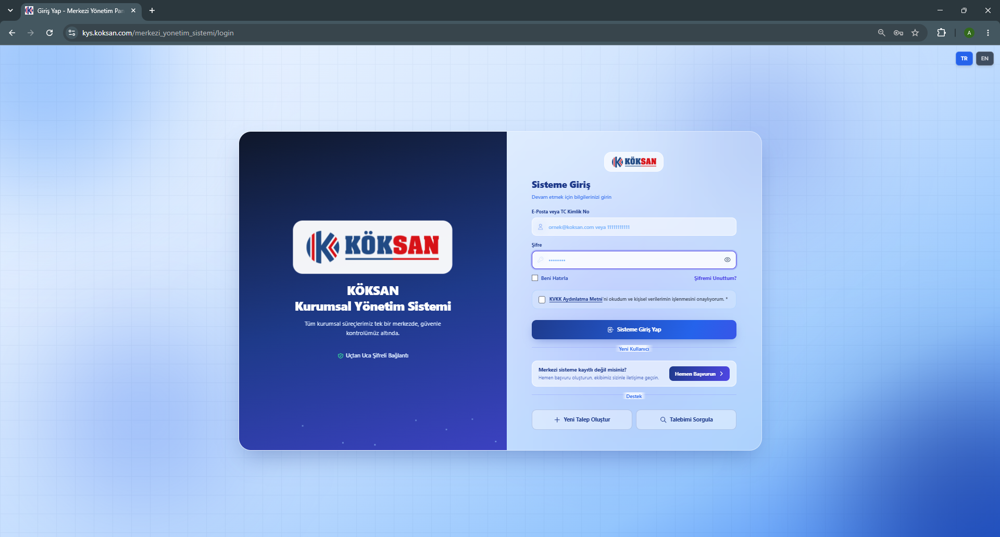
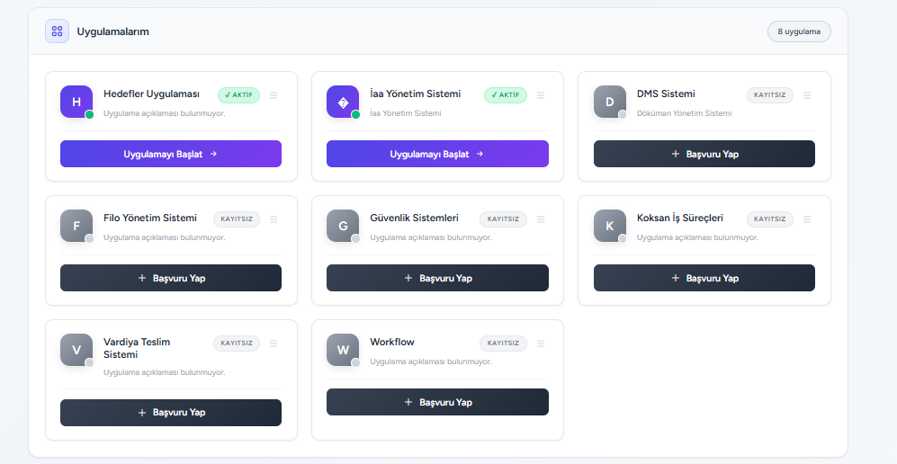
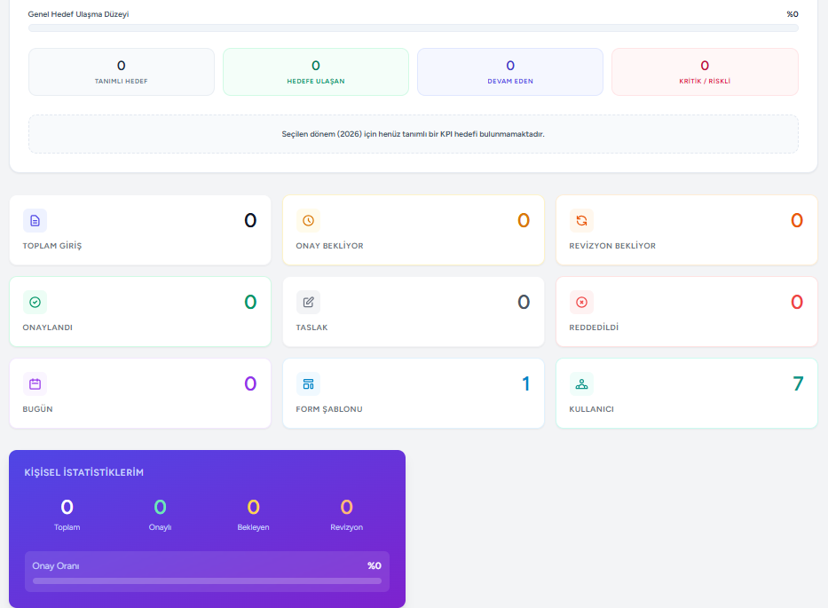
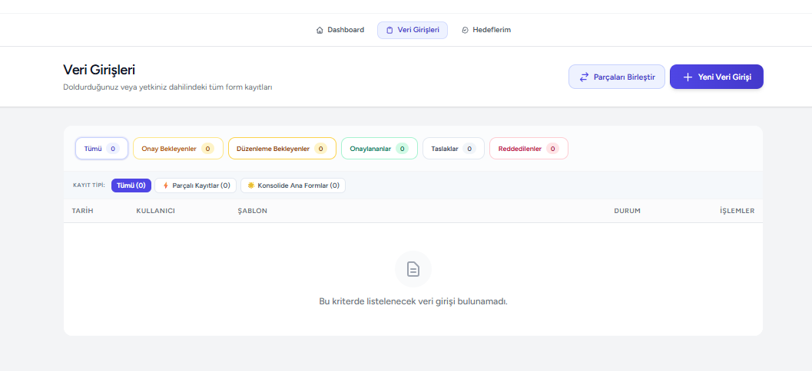
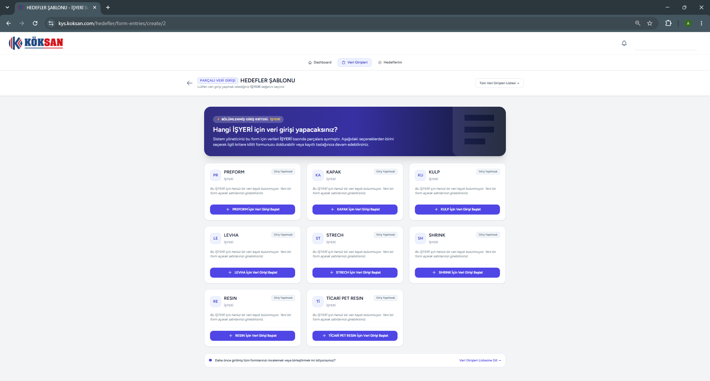
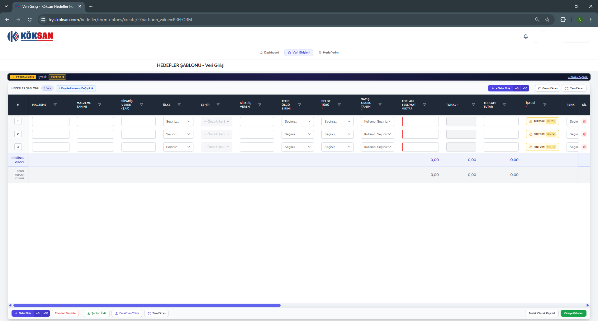
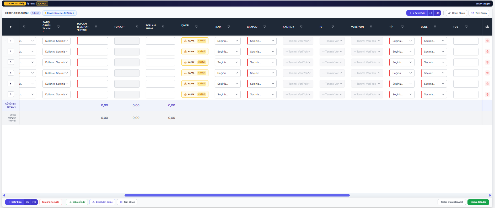
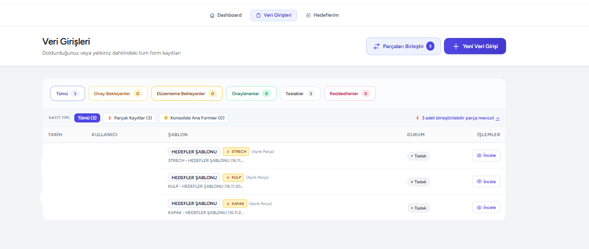
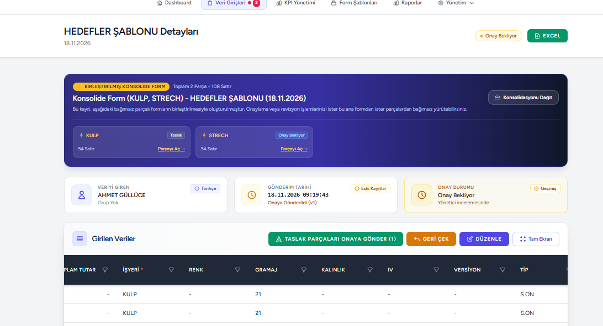
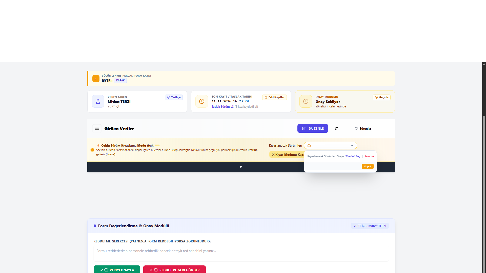

MERKEZİ SİSTEME GİRİŞ & KİMLİK DOĞRULAMA
1 / 11
Köksan Portal Güvenli Giriş Ekranı
Köksan Kurumsal Yönetim Sistemi merkezi portalına tanımlı kurumsal e-posta veya T.C. Kimlik numaranız ile güvenli oturum açılır.
Şirketiniz tarafından tanımlanmış kurumsal e-posta adresinizi (adiniz@koksan.com) veya T.C. Kimlik numaranızı yazınız.
Sisteme giriş için oluşturulmuş güvenli şifrenizi giriniz. Şifrenizi kimseyle paylaşmayınız.
Bilgileri doldurduktan sonra yeşil renkli "Sisteme Giriş Yap" butonuna tıklayarak kurumsal ana panele geçiş yapınız.
Şifrenizi unuttuysanız "Şifre Sıfırlama" bağlantısına tıklayarak e-posta adresinize sıfırlama talimatı isteyebilirsiniz.
HEDEFLER UYGULAMASINI BAŞLATMA
2 / 11
Merkezi Portal Ana Paneli
Başarıyla giriş yapıldığında Merkezi Portal sizi karşılar. Yetkili olduğunuz kurumsal uygulamalar arasından Hedef Yönetimi başlatılır.
Ana panelde tanımlı uygulamalarınız içerisinde "Hedefler Uygulaması" modülünü bulunuz.
Kartın hemen altındaki "Uygulamayı Başlat" butonuna tıklayarak doğrudan Hedef Portalı çalışma alanına erişiniz.
ÖZET GÖSTERGE PANELİ (DASHBOARD)
3 / 11
Durum Takibi ve İstatistikler
Hedefler sistemine giriş yaptığınızda açılan ana özet ekranıdır. Süreçlerin genel durumunu gösterir; bu alana veri yazılmaz.
Toplam Giriş, Onay Bekliyor, Taslak ve Onaylandı kutuları mevcut hedef kayıtlarınızın toplam sayısını gösterir.
İlgili çalışma yılı ve hedef dönemine göre paneldeki istatistikleri ve grafikleri filtreleyebilirsiniz.
Yeni hedef girmek ve kayıtları listelemek için üstteki "Veri Girişleri" sekmesini kullanacaksınız.
VERİ GİRİŞLERİ LİSTESİ & YENİ KAYIT
4 / 11
Kayıt Listesi ve Yeni Hedef Başlatma
Daha önce hazırladığınız taslakları, onaya gönderilmiş hedefleri inceleyebilir ve sıfırdan yeni veri girişi başlatabilirsiniz.
Üst menü çubuğundaki "Veri Girişleri" sekmesi sizi bu listeye ulaştırır.
Sağ üst köşede yer alan yeşil "+ Yeni Veri Girişi" butonuna tıklayarak hedef giriş sihirbazını başlatınız.
Yıl, dönem, durum (Taslak / Onay Bekliyor / Onaylandı) filtreleriyle geçmiş kayıtlarınızı anında bulunuz.
HEDEF ŞABLONU VE İŞ YERİ SEÇİMİ
5 / 11
Şablon ve Bölümlenmiş Fabrika Kartları
Hedeflerin girileceği şablon seçilir ve fabrikanıza/iş yerinize ait olan bölüm kartı üzerinden veri girişi açılır.
Genel hedef giriş şablonu kartında bulunan "Forma Veri Gir" butonuna tıklayınız.
Hedeflerin ait olduğu fabrikayı bulunuz (Örn: KAPAK, PREFORM, PET LEVHA vb.).
İlgili iş yeri kartının altındaki "Veri Girişi Başlat" düğmesine tıklayarak Excel tablosuna geçiniz.
DİNAMİK VERİ GİRİŞ TABLOSU (EXCEL GRID)
6 / 11
Satır Bazlı Veri Girişi ve Arama Kutulu Dropdownlar
Excel pratikliğinde çalışan dinamik grid tablosunda satır satır hedef bilgileri işlenir.
Malzeme, Ülke, Şehir, Sipariş Veren (Müşteri) gibi hedefleri satırdaki hücrelere yazınız. Hücreler arasında Ok tuşları veya Tab ile gezinebilirsiniz.
Dropdown hücresine tıklandığında açılan 🔍 arama kutusuna harfleri yazdığınız anda 1.900+ müşteri arasından anında filtreleme yapılır; Enter ile seçilir.
Her yeni hedef kaydı için sol altta yer alan "+ Satır Ekle" butonuna basınız veya klavyeden hızlıca satır açınız.
Sağ üst köşedeki "Tam Ekran" butonu ile tabloyu tüm monitöre yayabilir, "Sütunlar" menüsüyle istediğiniz sütunları sabitleyebilirsiniz.
EXCEL İLE TOPLU YÜKLEME VE TASLAK SAKLAMA
7 / 11
Excel Entegrasyonu ve Otomatik Kayıt Güvencesi
Yüzlerce satırlık hedefi tek seferde girmek için Excel şablonunu indirebilir veya formunuzu taslak olarak saklayabilirsiniz.
Seçili iş yerine ait doğru sütun başlıklarını ve veri formatlarını içeren boş Excel şablonunu bilgisayarınıza indirir.
Excel dosyanızı doldurup kaydettikten sonra bu butona basarak dosyanızı seçin; tüm satırlar otomatik doğrulanarak tabloya doldurulur.
Verileriniz henüz tamamlanmadıysa "Taslak Olarak Kaydet" butonuna basınız. Ayrıca sistem her 45 saniyede bir otomatik taslak kaydı alır.
ZORUNLU ALANLAR VE OTOMATİK HESAPLAMALAR
8 / 11
Hata Önleme, Tonaj Formülü ve Toplamlar
Sistem veri girişinde hataları önlemek için zorunlu alanları kırmızı işaretler ve tonaj değerlerini otomatik hesaplar.
Hedeflenen ürün sipariş adedini sayısal olarak giriniz (Örn: 50.000).
Ürünün gramajını açılır listeden seçiniz. Bu seçim tonaj hesaplaması için kritiktir.
Adet ve Gramaj girildiğinde formül devreye girer: Adet × Gramaj / 1.000.000 formülüyle Tonaj otomatik hesaplanır.
Sol kenarında kırmızı şerit bulunan alanlar zorunludur. Doldurulmadan onaya gönderilmeye çalışılırsa sistem eksik alanı otomatik odaklar.
ÇOKLU İŞ YERİ KAYITLARINI BİRLEŞTİRME
9 / 11
Parçalı Fabrika Taslaklarını Tek Formda Toplama
Birden fazla iş yeri için (Örn. hem KAPAK hem PREFORM) ayrı ayrı hazırladığınız taslakları tek bir ana kayıt altında toplayabilirsiniz.
Veri Girişleri listesinde, aynı döneme ait parçalı taslaklarınız varsa üst taraftaki "Parçaları Birleştir" butonu aktifleşir.
Açılan pencerede aynı anda onaya göndermek istediğiniz iş yeri kayıtlarının solundaki onay kutularını işaretleyiniz (En az 2 kayıt seçilmelidir).
Seçimi tamamladıktan sonra butona basınız. Seçtiğiniz tüm fabrikaların hedefleri tek bir konsolide kayıt haline getirilir.
SON KONTROL VE ONAYA GÖNDERME
10 / 11
Detay İnceleme, Revizyon ve Onay Akışı
Hedeflerin son kontrolü yapılır. Bilgiler doğru ve eksiksizse yönetici incelemesine sunulmak üzere onaya gönderilir.
Kayıt detayında bir hata veya güncelleme ihtiyacı görürseniz "Düzenle" butonuna basarak tabloyu tekrar açabilirsiniz.
Tüm bilgiler eksiksizse yeşil "Onaya Gönder" butonuna tıklayınız. Onay diyaloğunda işlemi onaylayınız.
Gönderim sonrası kayıt durumu "Onay Bekliyor" rozetine döner. Yöneticiniz onayladığında "Onaylandı" olarak güncellenir.
İstediğiniz an sağ üstteki yeşil "EXCEL" butonuna basarak tüm verileri resmi rapor formatında bilgisayarınıza indirebilirsiniz.
YÖNETİCİ ONAY VE DEĞERLENDİRME MODÜLÜ
11 / 11
Grup Yöneticisi (Serhat TÜMER) Onay/Red İşlemleri
Personele (Örn: Mithat Terzi) ait onay bekleyen hedefler Grup Yöneticisi Serhat Tümer tarafından incelenir; gerekçeli olarak onaylanır veya reddedilir.
Onay bekleyen kaydın altında yöneticilere özel "Form Değerlendirme & Onay Modülü" açılır. Formu giren personelin adı ve grubu (YURT İÇİ • Mithat TERZİ) rozette yer alır.
Veriler kontrol edilip uygun bulunduğunda yeşil "VERİYİ ONAYLA" butonuna basılır. Form durumu anında "Onaylandı" olur ve resmi KPI hedeflerine işlenir.
Hatalı veya eksik veri tespit edilirse "Reddetme Gerekçesi" kutusuna personelin düzeltmesi gereken detaylar yazılır ve kırmızı "VERİYİ REDDET" butonuna tıklanır.
Bu işlem yetkili Grup Yöneticisi (Serhat TÜMER) veya Sistem Yöneticisi tarafından güvenli oturum altında gerçekleştirilir ve tarihçeye kaydedilir.